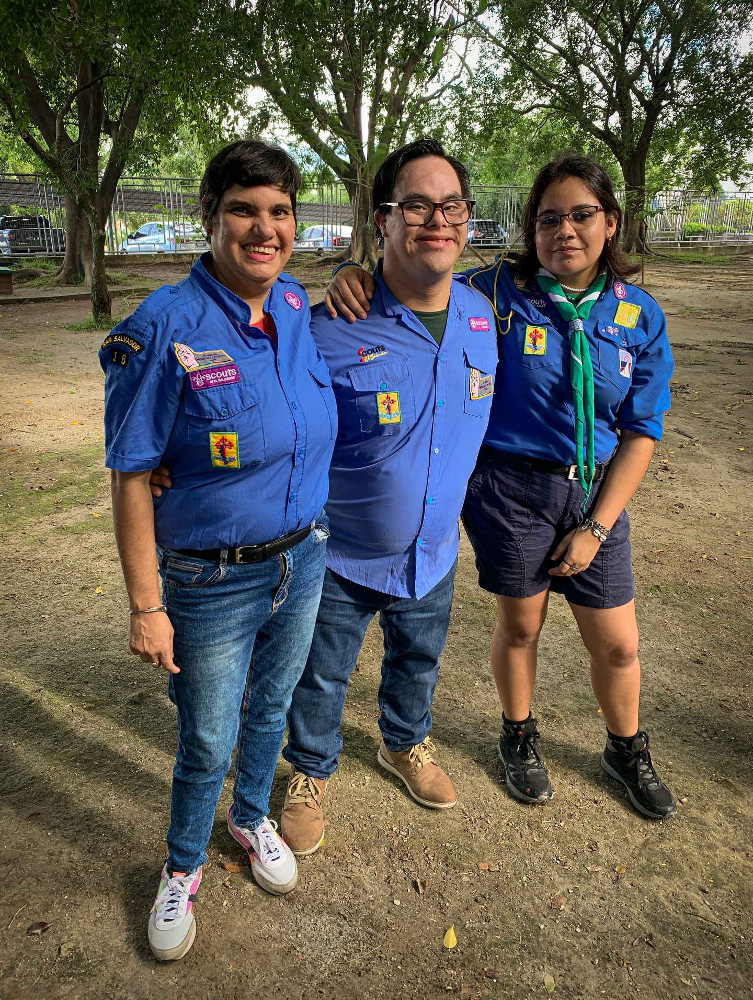
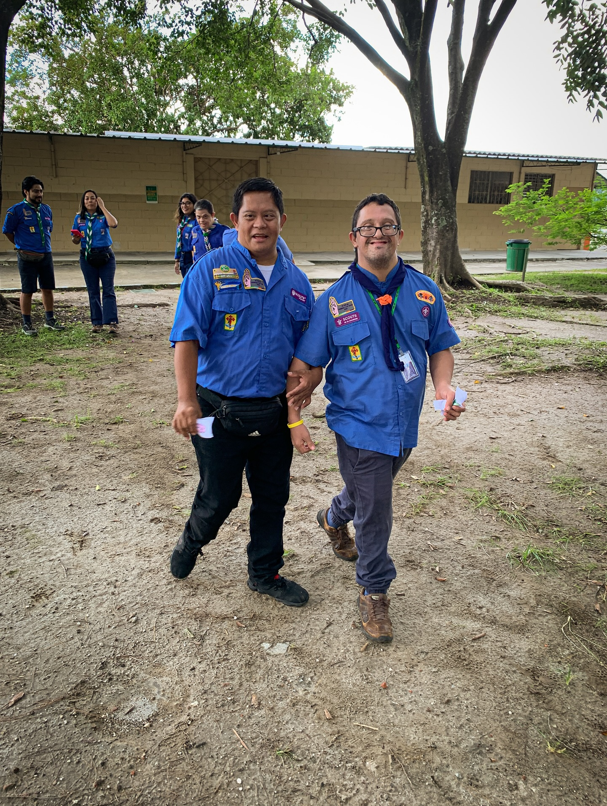
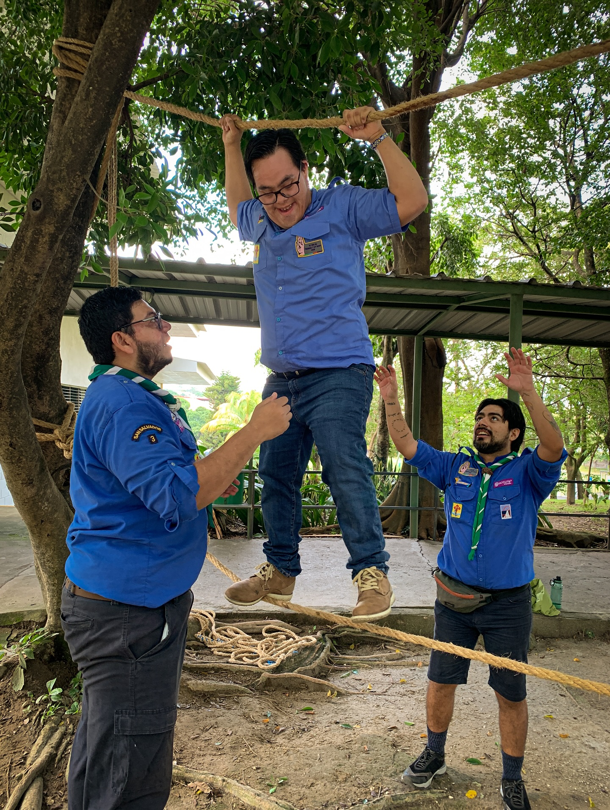

Convivencia Scout
Viviendo la hermandad Scout
Una jornada para compartir y aprender
La Comunidad Íñigo del Grupo Scout 3 “Javier” vivió una jornada especial llena de alegría y compañerismo junto al Grupo Scout 16 “Pandas”, perteneciente al Distrito de Grupos Unificados.
Fue un espacio donde se celebró la felicidad de ser scouts, fortaleciendo la amistad, el respeto y la hermandad que nos une como movimiento.
Lo que vivimos juntos
Alegría y convivencia
Compartiendo momentos auténticos de amistad scout.
Nuevos retos
Actividades que fortalecieron el trabajo en equipo.
Aprendizaje mutuo
Conociendo diferentes experiencias y realidades scouts.
Hermandad Scout
Reafirmando el valor de la unión y el respeto.
Galería



Construyendo un mundo mejor
Esta convivencia nos recordó que el escultismo se vive en comunidad, aprendiendo unos de otros y construyendo lazos que fortalecen nuestro compromiso con un mundo más inclusivo y solidario.
Gracias al Grupo Scout 16 “Pandas” por compartir esta experiencia y seguir demostrando que la hermandad scout trasciende grupos y distritos. 🌍⚜️